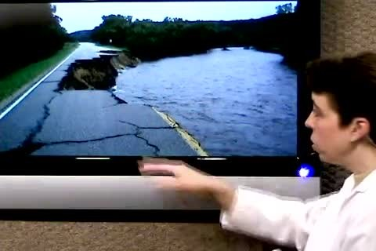
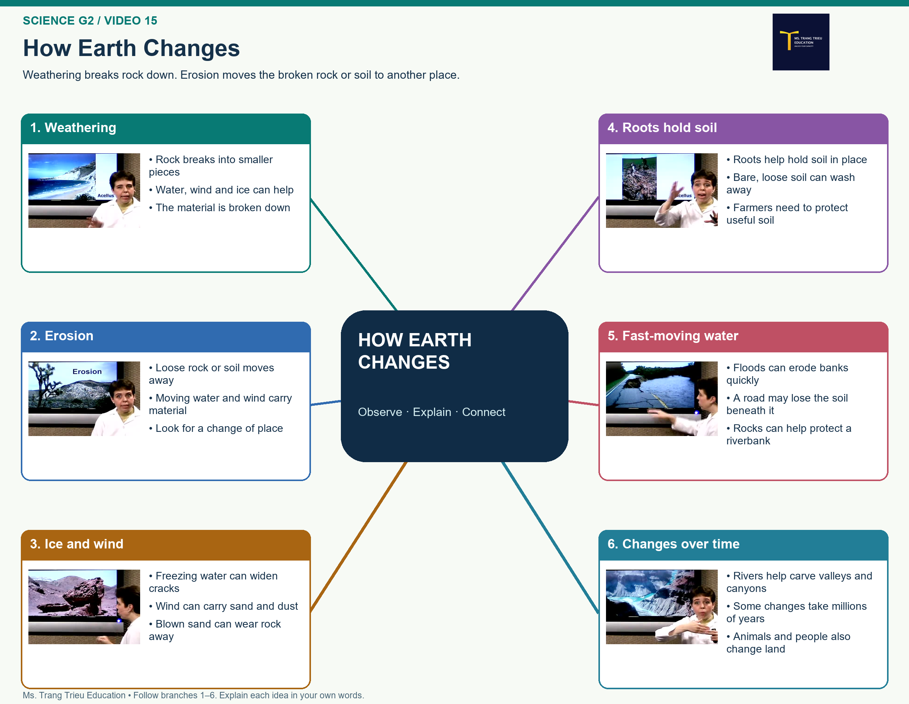

Quan sát
What is the difference between weathering and erosion?
Earth science
Con phân biệt phong hóa làm đá vỡ và xói mòn đưa vật liệu đi nơi khác, rồi giải thích cách rễ cây giúp giữ đất.

Nhiệm vụ của con
Con xem video, dùng mindmap sắp xếp ý, sau đó quay một video thuyết trình và một video trả lời năm câu hỏi nghe hiểu.
What is the difference between weathering and erosion?
How can water freezing in a crack help break a rock?
A rock breaks into small pieces, then rain carries the pieces downhill. Which part is weathering and which part is erosion?
Con xem trọn video nhiều lần. Lắng nghe cách người nói giải thích và quan sát các ví dụ.
Con đi theo nhánh 1–6. Dùng từ khóa và hình ảnh để nhớ ý, không học thuộc một bài đọc sẵn.

Video 1
Con nhìn từ khóa để dẫn dắt bài nói. Trình bày đủ ý theo cách của mình.
Trình bày đầy đủ, rõ ràng; chú ý phát âm, ngữ điệu và biểu cảm. Không đọc nguyên bài đã viết sẵn.
Video 2
Con nghe lại video và trả lời cả năm câu bằng câu tiếng Anh đầy đủ. Khi câu hỏi hỏi vì sao, con cần giải thích lý do.
Câu hỏi của bài 15
What is the difference between weathering and erosion?
How can water freezing in a crack help break a rock?
Why can a hill with grass lose less soil than a bare hill during rain?
How can a flood damage a road beside a river?
A rock breaks into small pieces, then rain carries the pieces downhill. Which part is weathering and which part is erosion?
Trả lời đủ năm câu, đúng nội dung video, dùng chi tiết phù hợp để giải thích.
Khi quay bài
Hoàn thành bài học
Con ghi đúng tên tiếng Anh, lớp và mã lớp. Mã bài SCIENCE-G2-15 đã điền sẵn; con giữ nguyên mã này.
Nộp bài SCIENCE-G2-15